ACADEMY GOALKEEPERS
Dean Henderson
Dean Henderson is believed to be the future of Manchester United in the goalkeeper position. He began to gain attention from the club supporters when David De Gea had a difficult time with his form. The appearance of Henderson is believed to make De Gea fight harder for a slot in the goallie.
Dean Henderson is also the future of the England National Football Team.
ACADEMY DEFENDERS
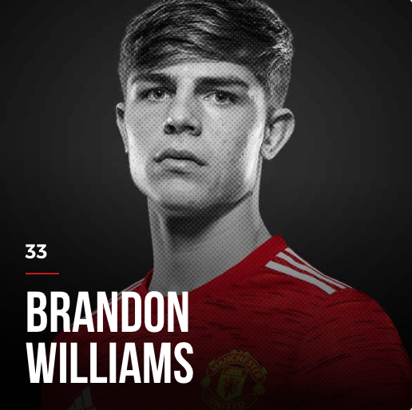 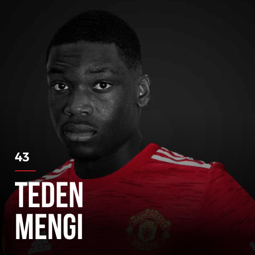
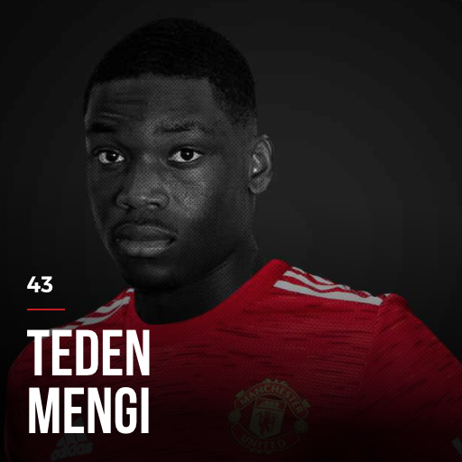
Brandon Williams is currently on loan for Norwich F.C. in the English Premier League. At first, he was believed to be a perfect replacement for Luke Shaw who was not in a good form two years ago. But then Shaw came back, making the competition for the kid become much harder. Going on loan is the best option for the young star.
Axel Tuanzebe was believed to be a future star of Manchester United; however, he has been prone to injuries for the past year. He has not played for the team for almost one year due to consistent injuries. The future of the young star at Old Trafford is still a question.
Teden Mengi is believed to be the future of the team as well. He is currently on loan for Derby County F.C. in English League 1 with Manchester United legend Wayne Rooney. He is a hope of the club and its supporters with his aggressive and confident play style regardless of experience of other players.
ACADEMY MIDFIELDERS
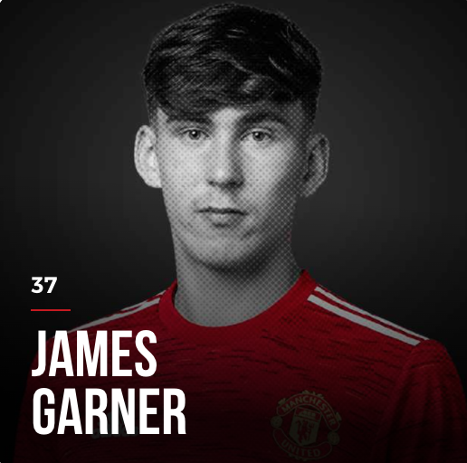 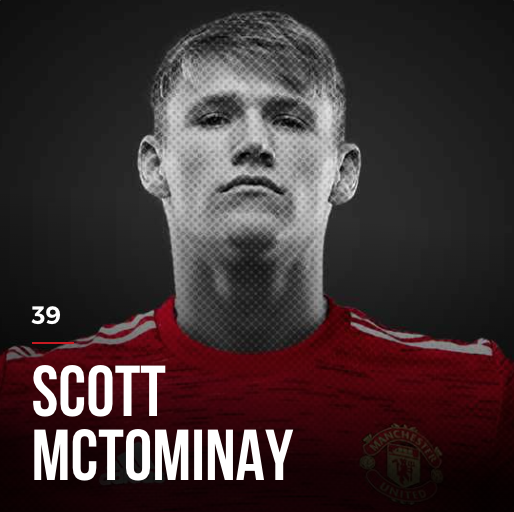 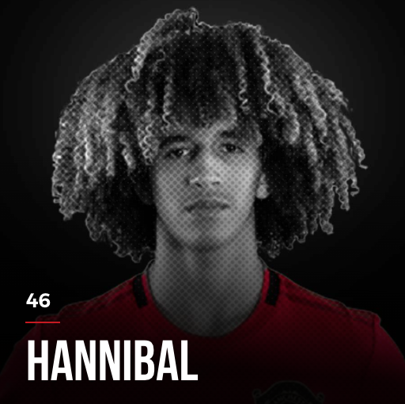
James Garner is currently on loan for Nottingham Forest F.C. in English League 1. He is famous for accurate long-ball pass. He has been awarded Best Player of the Month at the current loan club, which brings the supporters big hope that he could replace a leaving midfielder Paul Pogba.
Scott McTominay is famous for his aggressive play style, for which supporters give him the name "Mad Dog". Fun fact about him: he was 30-centimeter (1 feet) taller within just 2 years.
Hannibal is believed to be the next best future midfielder of Manchester United with accurate long-ball pass and critical short-pass skills for goal opportunity.
ACADEMY FOWARDS
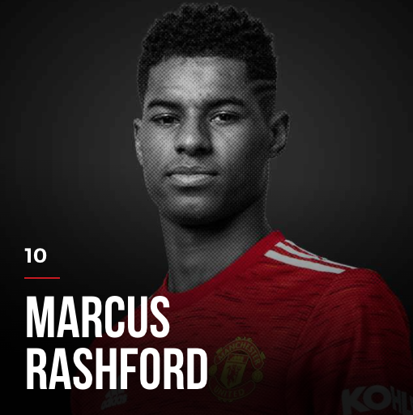 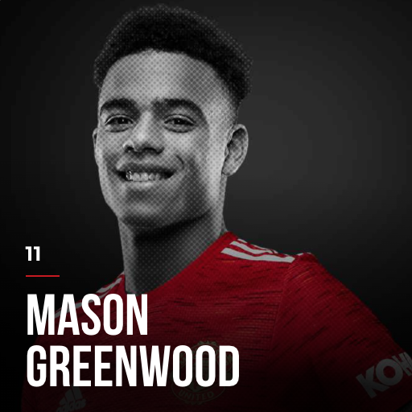 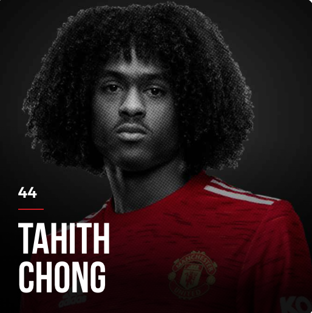
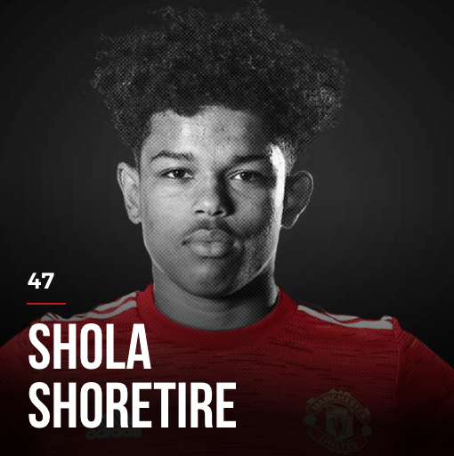
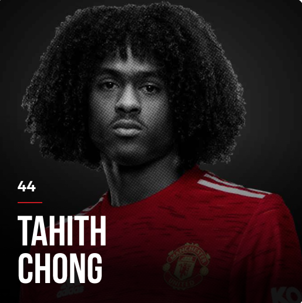
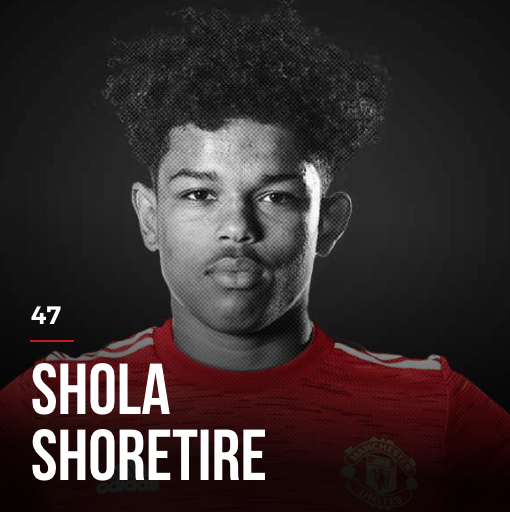
Marcus Rashford, a future monument at the club, is famous for being both a great player in the field and a great heart for the community. He has raised 1 million GBP to bring food to children during the pandemic.
Mason Greenwood is one of the top scorers for the league as a teenager. He is two-footed and his shooting skill is really efficient.
Elanga, Chong and Shoretire are called for Team 1 for their potentials, but still need time to prove. These players are still on loan in much smallers leagues of England Football Association.